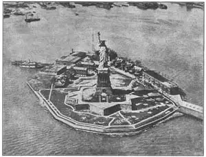

53
A HANDSOME PRESENT
精美的礼物

HAVE you ever been inside a statue? Most big bronze statues are hollow and often there is room inside for a man—if there were only any way of getting in. But there is only one statue in the whole world that hundreds of thousands of people have been inside of. The thousands of people can’t all get in at one time, but forty people can get into the head at one time. You’ve probably already guessed what I’m talking about. It is the Statue of Liberty.
The Statue of Liberty stands on a stone base or pedestal. The pedestal stands on a little island at the entrance of New York harbor. Every ship that goes in or out of New York passes near the statue. Even in the dark the passengers on a ship can see it, for at night it is lighted up with strong search-lights. Travelers coming back from abroad feel they are really home when they sight the Statue of Liberty.

No.53 THE STATUE OF LIBERTY（《自由女神像》） BARTHOLDI（巴托尔迪 制）
Photograph by Ewing Galloway
The Statue of Liberty is the biggest bronze statue in all the world. What would you think if you saw a woman as tall as a ten story building? A woman whose hand is sixteen feet long. (What a hand for swatting mosquitoes!) A woman whose eyes are each two and a half feet wide. (What eyes to get cinders in!) A woman whose uplifted right arm is forty-two feet long. (What an arm for throwing baseballs!) A woman whose finger is as long as an elephant is high! If you wanted that woman to wear a ring, the ring would have to be as big as a hoop. If you wanted the woman to wear gloves, the material for the gloves would spread over more room than a tennis court!
Such a woman is Liberty. She is sometimes called “Liberty En Lightening the World.” This is because Liberty holds a lighted torch, in her raised right band. The torch is so big that people climb a ladder inside the right arm and then walk around the torch as if it were a porch. You might make a rhyme of it:
Liberty’s torch,
Is used for a porch.
Held in Liberty’s left arm is a tablet. On the tablet (which is very much bigger than a dining room table) are these letters:
JULY IV
MDCCLXXVI
Do you know what they mean? Even if you don’t know, I’m not going to tell you, so you have a puzzle to work out.
The Statue of Liberty can be seen from a long way off, but you can’t get very close to it unless you take a boat. When you get off the boat you walk up some steps to the pedestal. Inside the pedestal you take an elevator and ride up to the top of the pedestal. Then you have to climb stairs to reach the top of the statue. The stairs wind round and round inside the statue like a snail’s shell, and the higher you climb, the more you feel like going slowly—also like a snail. As you climb you can see the framework that the statue is built around, made of rods of steel. You can see how the statue is fitted together out of separate pieces of bronze.
When you finally get up inside the head you can look out of windows in Liberty’s crown.
The man who made the huge statue was a Frenchman named Bartholdi (Bar-tól-dee). A Frenchman made it as a gift from the people of France to the people of the United States. Bartholdi chose the place for Liberty to be put and then went back to France and made a model. Then the model was used to make the huge bronze pieces of the statue itself. These pieces were brought, in a ship, to the United States and put together on the island. It was like fitting together a gigantic picture puzzle, for of course each piece of bronze was a different shape.
I think it was a very effective and friendly present for the Republic of France to give to the Republic of the United States, don’t you?
【中文阅读】
你进过雕像里边吗？大部分青铜雕像都是空的，所以如果有办法进到雕像里边的话，里面通常能容纳一个人。但是，世界上只有一座雕像里边能容纳几百，甚至几千人。当然，这几千人是不能同时进去的，不过雕像的头部一次能容纳四十人。你可能已经猜到我说的是哪座雕像了，它就是《自由女神像》。
《自由女神像》立在一座石基上，位于纽约港入口处的一个小岛上。每艘从纽约驶进驶出的船都要旁经这座雕像。即使到了夜晚，船上的乘客们也能看见雕像，因为射灯将它照得通亮。从国外归回的游子们只要看见自由女神像就感觉这下真的到家了。
《自由女神像》是世界上最大的青铜像。如果你看见一个有十层楼那么高的女子，你会怎么想呢？这女子的手有16英尺长。（打蚊子多方便啊！）眼睛有2.5英尺宽。（太容易吸煤灰了！）那只没有抬起的胳膊有42英尺长。（打棒球多棒啊！）她手指的长度等于大象的高度！如果要给这女子戴戒指，那这戒指得有铁环那么大；如果要给她戴手套，那做手套的材料能覆盖一个网球场还不止！
这女子就是自由女神。有时候也把她叫做“自由照耀世界之神”，因为她右手高举一个点亮的火炬。这火炬很大，人可以顺着梯子爬进右手臂，在火炬里走动，就像在走廊里一样。有首打油诗是这样写的：
将自由女神的火炬，
当作长廊。
自由女神的左胳膊夹着一块铜板（比餐厅的餐桌还要大好多）。上面写着这些字：
JULY IV
MDCCLXXVI
你知道是这些字的意思吗？如果不知道，我也不打算说了，因此，就把它当作谜语猜吧。
人们从很远处就能看见自由女神像。但要想近看的话，就得乘船才行。下船后，往上走几步到达雕像基座。然后，登楼梯到达像顶。雕像里的楼梯迂回曲折，好像蜗 牛壳。爬得越高，觉得越慢——自己也像一只蜗牛。在攀爬的过程中，可以看到雕像内部的钢铁支架。还可以看到整个雕像是靠许多单独的青铜片完美地拼接的。
当你最终爬到头部时，可以从自由女神皇冠上的窗户向外眺望。
这座巨像是一个名叫巴托尔迪的法国人制作的。这法国人制作它是把它当作法国人民送给美国人民的一份礼物。巴托尔迪先到美国选址，再回法国制作模型。然后根据模型来制作巨像的铜片。这些铜片用船运往美国，在小岛上组装。这就像拼凑一幅巨大的拼图，因为每块铜片的形状各不相同。
我认为，自由女神像是法兰西共和国送给美利坚合众国的一份非凡的礼物，展示了两国之间深厚的友谊。你觉得呢？